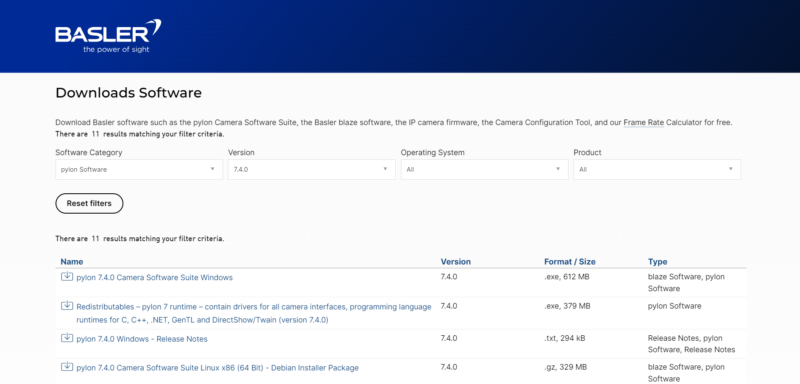

PylonSDK
1. Download Pylon SDK from Basler's website:

2. Select camera suite for windows:

3. Fill in details to download SDK:

4. Download .exe file:

5. Agree to terms and conditions:

6. Select developer profile:

7. Select all the interfaces applicable:

8. Keep the default destination folder:

9. Verify and install Pylon SDK:

10. Wait for installation to complete:

11. Close installer:

12. Once installed open Pylon Viewer to test camera: